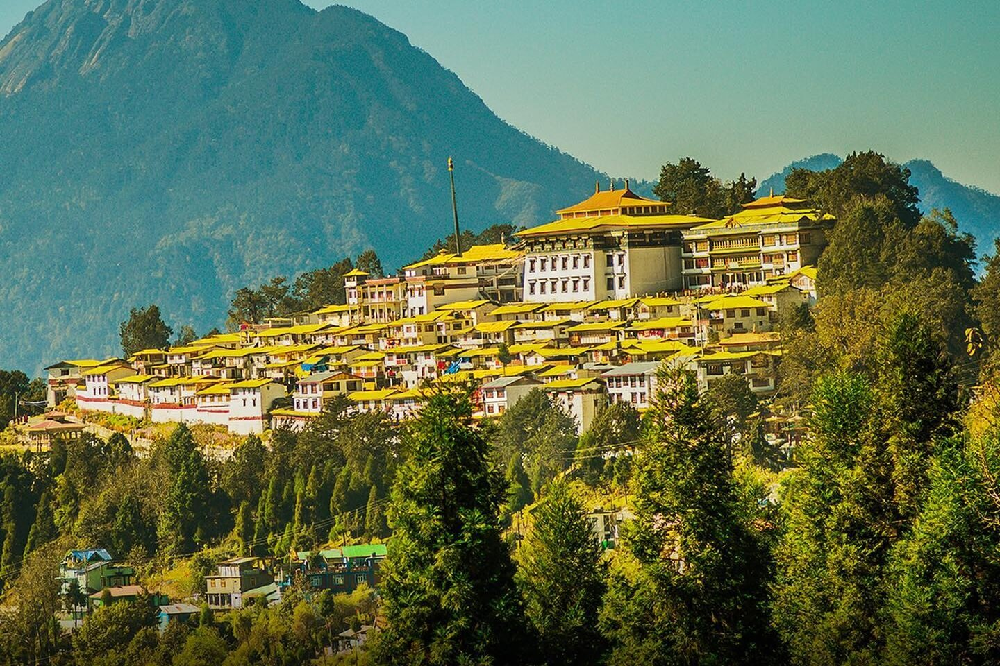
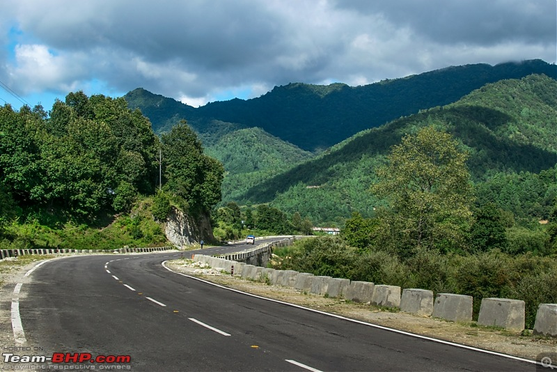
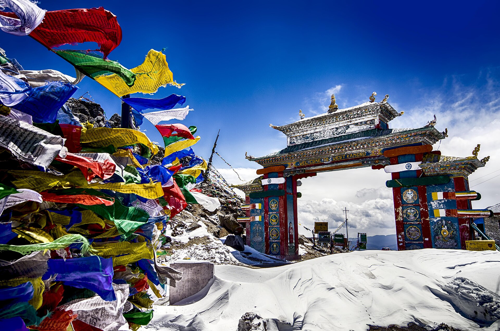
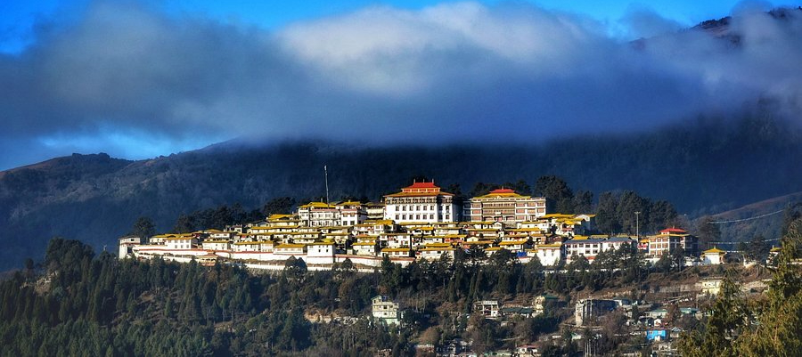
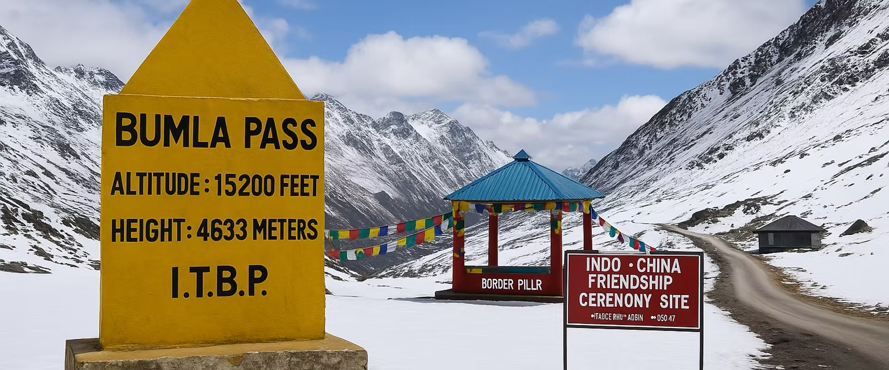
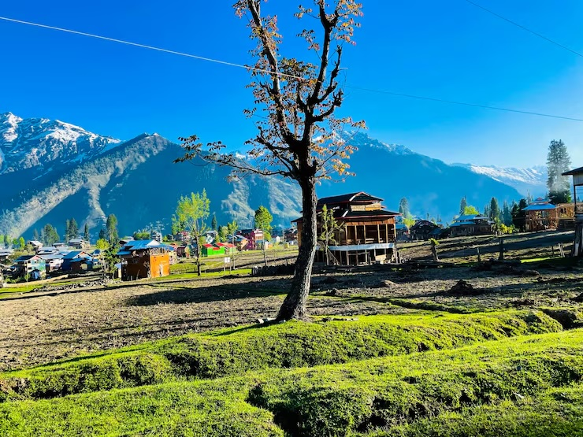
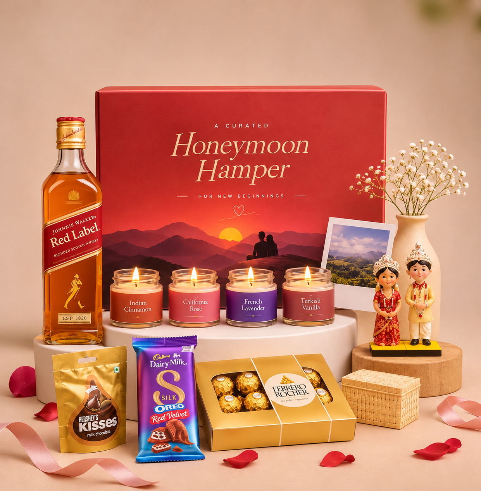

A private journey • Arunachal Pradesh
The Tawang &
Shergaon Escape
A private Himalayan road journey for two — through riverside valleys, high mountain passes, sacred lakes and quiet mountain landscapes.
6 Days / 6 Nights
Private Road Trip
Private Cab
The journey
From river valleys to the high Himalayas
A scenic circuit beginning in Guwahati, travelling through Sangti Valley and Tawang, and returning via the peaceful countryside of Shergaon.
A little something special
Thoughtful moments, mountain views and a few lovely surprises along the way — designed for two to slow down and enjoy the journey together.
Your route, at a glance
A beautiful loop through the Eastern Himalayas
01
Guwahati
The journey begins
02
Sangti Valley
Riverside stillness
03
Tawang
Into the high Himalayas
04
Shergaon
A quieter mountain escape
05
Guwahati
The return
01
At a glance
Your journey, mapped out
6 days / 6 nights
A road trip through some of Arunachal Pradesh's most memorable landscapes, combining long scenic drives with time in the mountains.

6D / 6NDuration
PrivateTravel style
CoupleJourney type
Road tripExperience
Route overview
| Day | Route / Plan | Overnight |
|---|
| Day 0 | Arrive in Guwahati, late evening | Guwahati |
| Day 1 | Guwahati → Tezpur → Bhalukpong → Bomdila → Dirang → Sangti Valley | Sangti Valley |
| Day 2 | Sangti → Sela Pass → Sela Lake → Jaswant Garh → Nuranang Falls → Tawang | Tawang |
| Day 3 | Tawang, high-altitude lakes and Bumla Pass excursion | Tawang |
| Day 4 | Tawang → Dirang → Bomdila → Shergaon | Shergaon |
| Day 5 | Shergaon → Rupa → Bhalukpong → Tezpur → Guwahati | Guwahati |
Travel note
Driving distances and journey durations are estimates and may vary depending on road conditions, weather, traffic, permits and local restrictions.
02
The itinerary
Into the mountains
Days 0–1
Day 0 • Arrival
Welcome to Guwahati
Arrive in Guwahati at approximately 10:00 PM. Check in to a comfortable hotel near the airport and rest before the road journey begins the following morning.
Airport-area hotel
Indicative accommodation estimate: ₹1,200–₹1,500 per room per night. Hotel selection subject to final confirmation.
Transfer: Airport pickup on arrival night is not included.
Day 1 • Guwahati to Sangti Valley
A scenic drive into the Eastern Himalayas
Set off early from Guwahati and travel through Tezpur, Bhalukpong, Bomdila and Dirang before reaching the beautiful riverside setting of Sangti Valley.
350–385 kmApprox. distance
9–11 hrsDrive with breaks
5–6 AMSuggested departure

Along the way
- Drive through the changing landscapes of Assam and Arunachal Pradesh.
- Scenic mountain roads, rivers and forested stretches.
- Arrive in Sangti Valley by evening, depending on road conditions.
Evening experience
Enjoy a candlelight dinner beside the river, with a romantic table arrangement and complimentary wine.
Food is ordered separately from the property's menu.

Riverside stay setting

A special evening by the river
Dinner suggestions
Chicken or paneer tikka, a local curry, dal, seasonal vegetables, rice or pulao, naan or roti, followed by dessert. Items are subject to menu availability and are charged separately.
03
The itinerary
Crossing into Tawang
Day 2
Sangti Valley to Tawang
Leave Sangti Valley and make your way towards Tawang through one of the region's most spectacular mountain routes. The day brings dramatic high-altitude scenery, a glacial lake, a historic memorial and a powerful waterfall.
150–180 kmApprox. distance
8–10 hrsTotal journey
7 AMSuggested departure

Dirang
A short stop may be possible at Dirang Monastery, depending on the day's schedule.
Sela Pass — approximately 4,170 metres
A spectacular high-altitude mountain pass, with snow-covered landscapes during suitable weather conditions.
Sela Lake
Pause for photographs and enjoy the striking mountain setting.
Jaswant Garh War Memorial
A memorial honouring the bravery and sacrifice of Indian soldiers.
Nuranang / Jung Falls
A dramatic waterfall cascading down the mountainside, famously associated with the song “Tanhai Tanhai” from the film Koyla.
Arrive in Tawang
Check in and unwind after the mountain drive.
Two nights in Tawang
Stay at a comfortable mountain-view property, with time to relax between the scenic drive and the following day's excursion.
Breakfast is not included. Tea with cookies or cake will be arranged separately.
04
Your mountain stay
Two nights in Tawang
Accommodation feature
A comfortable mountain-view retreat to return to after days spent exploring the high-altitude landscapes around Tawang.
Tawang accommodation
Himalayan Mountain Stay
Settle into a warm and welcoming room after your scenic journey through Sela Pass. Enjoy the views, unwind between excursions and return here after your Bumla Pass adventure.

Two nights' accommodation. Breakfast is not included.
Tea with cookies or cake will be arranged separately.
Rest and recharge
The stay gives you a comfortable base for the full-day Bumla Pass and high-altitude lake excursion on Day 3.
05
The itinerary
Into the high Himalayas
Day 3
Tawang, high-altitude lakes & Bumla Pass
Spend the day exploring the extraordinary landscapes beyond Tawang. This is a full-day high-altitude excursion, with pristine lakes, mountain panoramas and the historic border region.
8–10 hrsApprox. excursion
7–8 AMSuggested departure
15,200 ftBumla Pass altitude

Proposed sightseeing circuit
- P.T. Tso
- Nagula Lake
- Klemta Lake
- Khamakhar Tso
- Sangetsar Tso / Madhuri Lake
- Joginder Singh Memorial
- Bumla Pass
Important Bumla excursion information
Bumla Pass requires special permission and Army clearance. Travel is subject to weather, road conditions and local authorisation. An authorised local 4x4 vehicle is included for the Bumla excursion.
Evening at leisure
Return to Tawang after the excursion and enjoy a relaxed evening at the hotel.
Carry snacks and drinking water for the excursion. Meals are not included. The exact lake sequence and accessibility will be confirmed with the local operator. The optional Tawang War Memorial Light & Sound Show is not included; timing and ticket charges should be confirmed locally.
06
The return journey
Quiet corners & countryside
Days 4–5
Day 4 • Tawang to Shergaon
A slower pace in Shergaon
Depart Tawang after breakfast and travel back through Dirang and Bomdila towards Shergaon. Arrive in the afternoon and settle into a peaceful tree-villa stay surrounded by nature.
200–215 km
Approx. distance
6–8 hrs
Estimated drive
7–8 AM
Suggested departure


Shergaon Tree Villa
A quiet countryside stay offering a change of pace after the high-altitude mountain journey.
Day 5 • Shergaon to Guwahati
Back to Guwahati
Begin the return journey through Rupa, Bhalukpong and Tezpur, continuing onwards to Guwahati. The planned drop is near Kamakhya Temple.
220–250 km
Approx. distance
6–8 hrs
Estimated drive
7–8 AM
Suggested departure
Guwahati return stay
One night at a hotel near Kamakhya Temple. The hotel will be finalised subject to availability.
A visit to Kamakhya Temple may be planned the following morning, subject to the onward travel schedule.
07
Where you'll stay
Accommodation overview
A selection of comfortable stays along the route, balancing convenient overnight stops with memorable mountain and countryside settings.
| Destination | Stay | Nights | Notes |
|---|
| Guwahati — arrival |
Airport Comfort Stay |
1 |
Hotel near airport. Indicative estimate ₹1,200–₹1,500 per room. |
| Sangti Valley |
Riverside Valley Retreat |
1 |
Riverside setting and candlelight dinner arrangement. |
| Tawang |
Himalayan Mountain Stay |
2 |
Mountain-view room. Breakfast not included; tea and snacks arranged separately. |
| Shergaon |
Shergaon Tree Villa |
1 |
Tree-villa stay in a peaceful countryside setting. |
| Guwahati — return |
Kamakhya City Stay |
1 |
Hotel near Kamakhya Temple. Indicative estimate ₹1,200–₹1,500 per room. |
Accommodation note
The itinerary includes six overnight stays: one in arrival Guwahati, one in Sangti Valley, two in Tawang, one in Shergaon and one in return Guwahati. Guwahati hotel selections are subject to final confirmation and availability.
A closer look at your stays

Sangti Valley
Riverside setting with a candlelight dinner arrangement.

Shergaon Tree Villa
A peaceful tree-villa experience in the countryside.
08
The details
Inclusions & exclusions
Included
- Accommodation for all six nights across the listed route, including both Guwahati stays.
- Private Swift Dzire with an experienced and courteous driver for the scheduled itinerary.
- Fuel, tolls, parking and driver allowance.
- Authorised local 4x4 vehicle for the Bumla Pass excursion.
- Arunachal Pradesh Inner Line Permit arrangements.
- Riverside candlelight dinner setup in Sangti Valley.
- Complimentary wine with the Sangti Valley dinner arrangement.
- Scheduled transfers and sightseeing transportation.
Not included
- Airport pickup on Day 0 (arrival night).
- Meals and beverages, except the specifically mentioned complimentary arrangements.
- Food ordered separately from the Sangti Valley property's menu.
- Personal entry or admission fees at attractions, monuments and visitor sites.
- Optional Tawang War Memorial Light & Sound Show tickets.
- Optional honeymoon hamper (₹3,999).
- Personal expenses, shopping, tips and services not specifically listed.
Important distinction
Both Guwahati hotel nights are included in the accommodation plan. The airport transfer on arrival night (Day 0) is not included.
Booking payment schedule
25%
Token deposit to confirm booking
50%
At the commencement of the trip
25%
One day before the trip ends
Total payment: 100% of the agreed package amount.
09
A thoughtful extra
The honeymoon hamper
Optional • ₹3,999
Make the journey a little more special with an optional curated hamper, thoughtfully put together for a celebration of two.

Hamper concept
- Premium Scotch Whisky
- Luxe Scented Candles
- Chocolates & Sweet Treats
- Curated Honeymoon Hamper
- Celebratory Additions
Good to know
The hamper is optional and priced at ₹3,999. Final contents, brands and presentation may vary depending on availability. Any alcoholic item is subject to applicable regulations and the property's policy.
Before you travel
Useful travel notes
Permits & identification
Carry a valid original government-issued photo ID for Inner Line Permit arrangements and travel formalities.
Weather & road conditions
Mountain weather can change quickly. Driving schedules may be adjusted for safety and local conditions.
Bumla Pass access
The excursion depends on special permits, Army clearance, weather and road accessibility.
High-altitude travel
The itinerary includes high-altitude locations. Follow local guidance and allow the driver/operator to adjust the plan when needed.
Itinerary flexibility
The exact sequence of high-altitude lakes and sightseeing stops will be confirmed with the local operator. Some locations may be inaccessible due to weather, road or administrative restrictions.
10
A journey to remember
Find your own
little corner of the Himalayas.
From riverside evenings to snow-lined mountain passes, may this journey be filled with beautiful views, meaningful moments and memories you carry home.
Until the mountains call again
We look forward to making your journey through the Eastern Himalayas comfortable, memorable and truly special.
A private road journey through Guwahati, Sangti Valley, Tawang and Shergaon.
11